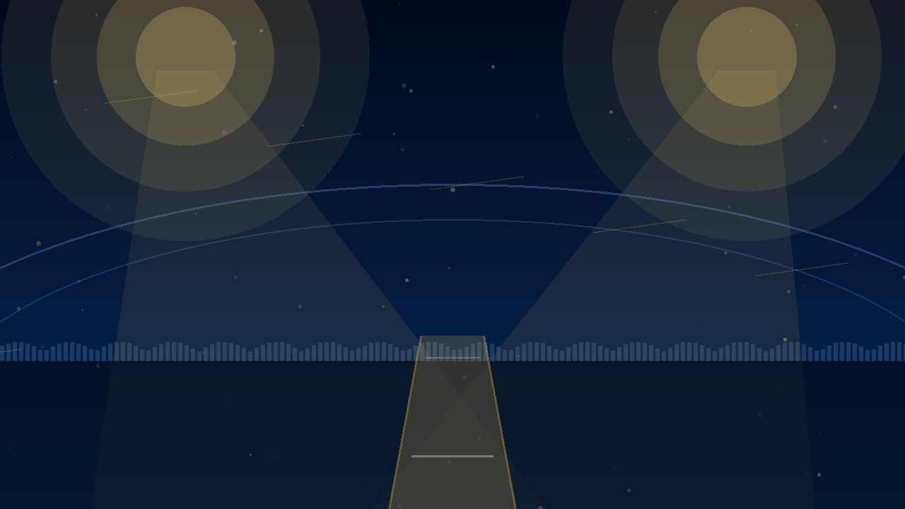

ORANGE CAP
Top run scorers
No batting statistics yet.
TNYPL TOURNAMENT CENTRE
One official venue · 15 T20 matches · 14–18 September 2026

Add the match video ID from the Tournament Admin dashboard.
FIXTURES
One venue. Fifteen matches. Schedule can be managed from the admin portal or synced from CricHeroes when a supported method is confirmed.
| Match | Date | Time | Teams | Venue | Status |
|---|---|---|---|---|---|
| Schedule will be published here. | |||||
POINTS TABLE
| # | Team | P | W | L | NR | NRR | Pts |
|---|---|---|---|---|---|---|---|
| Standings will update after results are recorded. | |||||||
ORANGE CAP
No batting statistics yet.
PURPLE CAP
No bowling statistics yet.
MATCH RESULTS